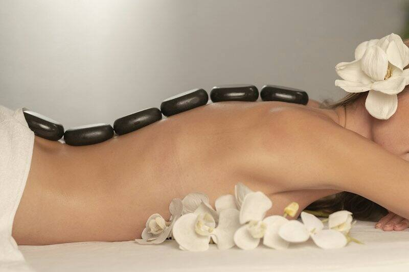
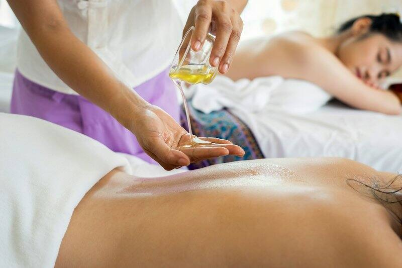
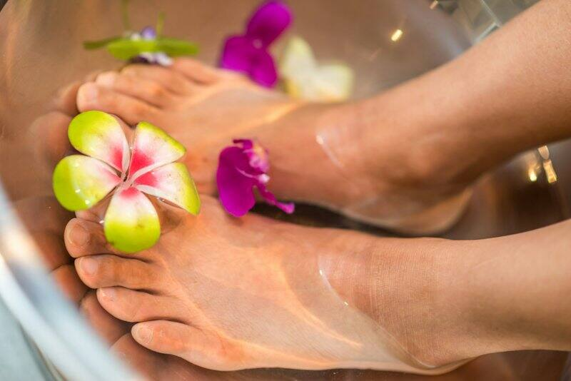
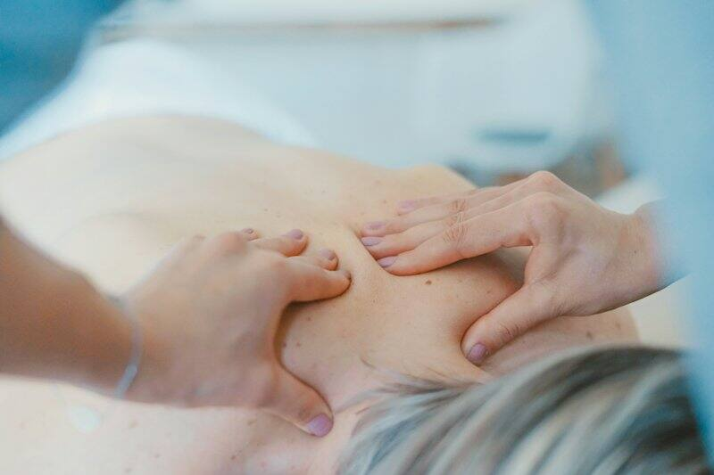

Massages du monde
Taurumi, lomi-lomi, balinais, thaï, abhyanga, californien : choisissez votre destination le temps d'une séance.
Voir les massages →
Les Mages · Alès · Gard
Offrez-vous une parenthèse de douceur aux couleurs de la Polynésie : Taurumi, massages du monde et réflexologie, au salon ou chez vous.

L'esprit de Tahiti
Profondément attachée à la culture de Tahiti et de la Polynésie, Isabelle est l'une des seules praticiennes en France à pratiquer le Taurumi et à l'enseigner.
Transmis de génération en génération dans les îles, le Taurumi associe de longs mouvements des avant-bras, la chaleur du monoï et un rythme proche de la houle. Une expérience enveloppante, pour un lâcher-prise profond.
Trois façons de prendre soin de vous
Des traditions venues des quatre coins du monde, réunies dans un même art du toucher.
Taurumi, lomi-lomi, balinais, thaï, abhyanga, californien : choisissez votre destination le temps d'une séance.
Voir les massages →
Des pressions douces sur les zones du pied pour une détente globale et un vrai sentiment de rééquilibrage.
Découvrir la réflexologie →
Apprenez le Taurumi et les gestes du massage bien-être auprès d'une praticienne passionnée, en petits groupes.
Voir les formations →Où vous recevoir
Les tarifs sont identiques pour tous les massages et la réflexologie.
Un espace calme et chaleureux, au 178 chemin du Roulet Haut, à quelques minutes d'Alès.
Isabelle se déplace avec tout son matériel dans un rayon de 20 km autour des Mages, sans frais de déplacement. Au-delà : minimum 2 massages.
Mana & douceur
Parfum de tiaré, monoï tiède, musique douce, gestes amples : chaque séance est pensée comme un voyage. Isabelle prend le temps d'écouter vos envies pour vous proposer le massage le plus juste, dans le respect de votre rythme.
Faire connaissance avec IsabelleSur rendez-vous
La réservation se fait uniquement par téléphone. Isabelle vous conseille sur le massage le plus adapté à vos envies et convient avec vous d'un rendez-vous, au salon ou chez vous.
Vous pouvez aussi écrire à isabelledinunzio@gmail.com ou suivre Isabelle sur Instagram @lacherprisemassage.